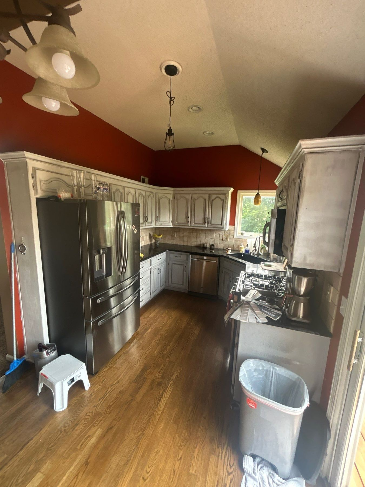
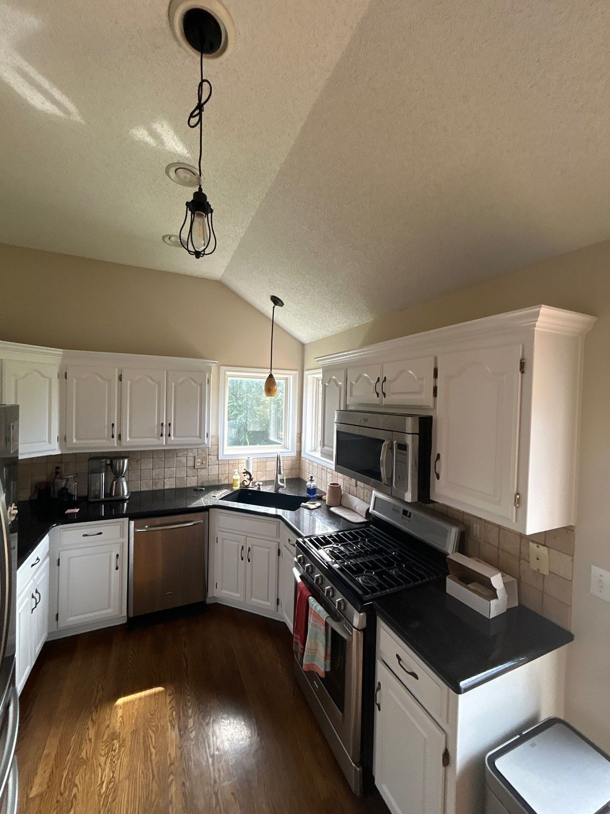
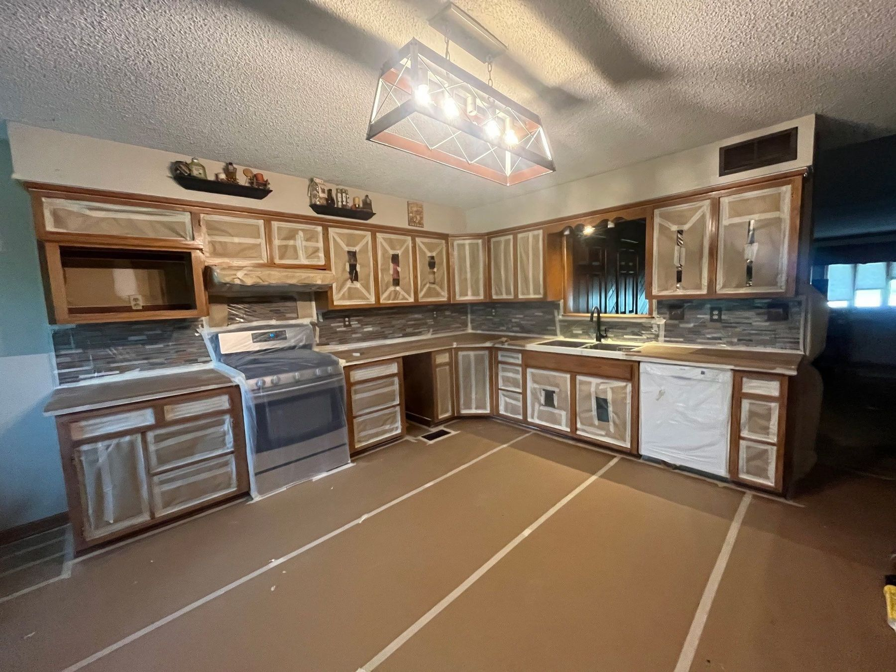
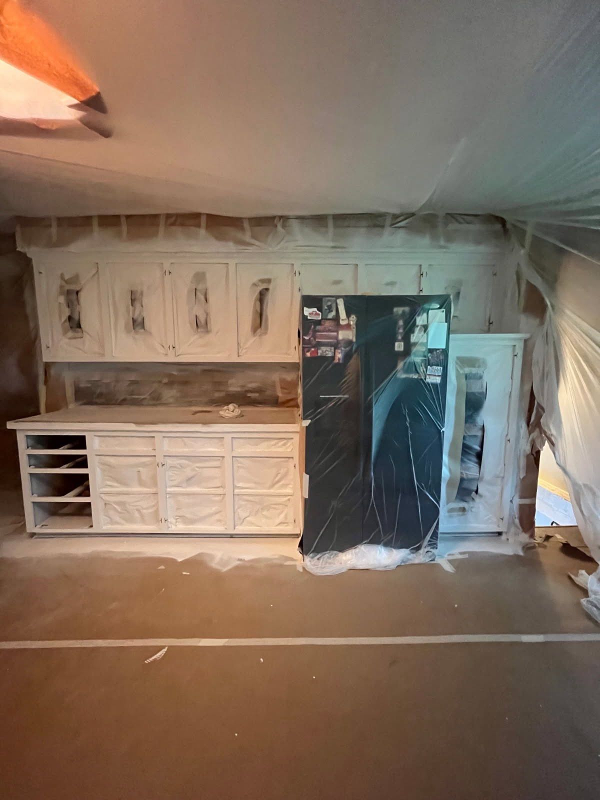
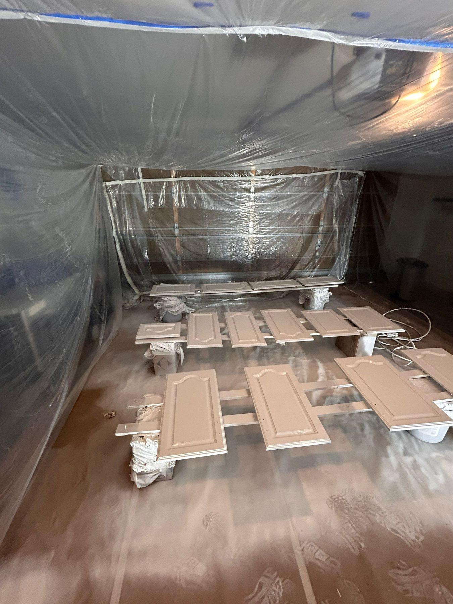

Don't spend $30,000 replacing cabinets that can look factory-new for a fraction of the cost.
Get Your Free EstimateEvery week we meet homeowners about to gut a kitchen because they think the cabinets are done. They're usually not — dated color and worn finish make solid cabinets look far worse than they are. Refinishing keeps your layout and boxes and transforms everything you actually see.
Here's why our cabinet finishes come out looking factory-made instead of "painted":
Most kitchens are done in under a week — a short disruption for a transformation that lasts years.
Schedule a Free Walkthrough

A factory-smooth finish doesn't come from the spray gun — it comes from everything that happens before it. Here's what your kitchen actually looks like mid-project.

Floors papered and taped, every door and drawer removed and labeled, appliances wrapped, countertops and backsplash masked. Nothing gets touched by paint except cabinets.

The kitchen itself gets sealed in plastic so the cabinet boxes can be sprayed in place — smooth, even coats with zero overspray traveling anywhere else in your home.

Doors and drawers go to a fully enclosed spray area we build on site — typically in the garage — where dust-free, fine-finish coats are laid down and cured flat. That's where the factory look comes from.
If your cabinet boxes are solid, refinishing delivers the same visual transformation at a fraction of replacement cost — and in days instead of weeks of demolition. If your cabinets genuinely need replacement, Ethan will tell you that at the walkthrough rather than paint over a problem.
With proper prep and sprayed enamel, many years of daily kitchen use. The bonding primer step and spray application are what make the difference — skip either and finishes chip fast.
It depends on the number of doors, drawers, and openings, plus the condition of the existing finish. Read how we price every job — then get a real number with a free walkthrough, and we'll show you before-and-afters from kitchens right here in KC.
Free walkthrough with the owner. Detailed written quote. Real KC before-and-afters.
Request a Free EstimateOr call/text 913-210-1041